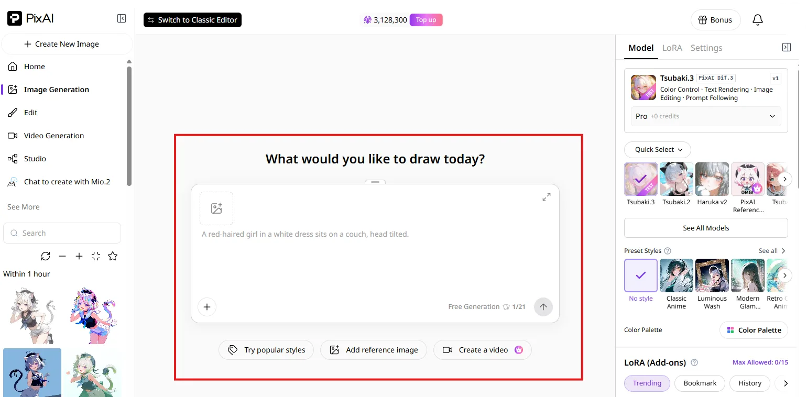

PixAI 入门实战：三小时从零跑到稳定出图
PixAI 是一款主打移动端的 AI 绘画工具，本文带你从注册登录开始，完成提示词三段式写法、点数成本控制、新手最易踩的三个坑排查，跑通第一张能用的图。
读完这篇教程，你能在 PixAI 上独立跑完一次完整的生图流程——从选模型、写提示词、调参数到拿到第一张能看的图，不会再因为点数超支、负面词冲突或者主体塞太多而卡壳。整个过程控制在三个小时以内，大部分时间是在等图生成。
准备：平台、账号、点数三件事
PixAI 同时提供安卓 App 和桌面端，它的官网上把功能和平台说明列得很清楚。新手直接用手机就行，从官方下载拿 App 装上就能跑，触控操作比桌面面板友好。第一次启动需要注册登录，手机号一键验证，没有门槛。
登录之后先别急着生成，看一眼你的点数余额。平台每天登录送一万点，还有发布作品、收点赞、看广告这些免费渠道，攒一攒够你连着跑好几百张。点数不过期，攒在那里不会清零，想等攒够了再开大批量也完全可以。
生图的点数消耗和三个变量直接相关：模型档位、输出尺寸、批量张数。轻量模式一张图起价两千点，旗舰模型会更高，但刚上手先用轻量模式就行，差距主要在细节丰富度和处理速度，先把流程跑通比盯着画质重要。
第一步：打开生成面板，挑个模型
进入首页，底部栏点中间那个带画笔图标的按钮，直接跳进生成面板。面板分左右两半——左边写提示词，右边调参数和选模型。
模型列表默认展示平台主推的几款，按档位分轻量、标准、专业、极致四档。轻量档出图快、点数省，适合快速试错；旗舰档画质高但每张消耗可能到一万点以上。第一次跑直接挑轻量档里最新的那个，比如 Haruka 系列的 v2 版本——社区里公认它对新手最友好，风格覆盖面广，出图稳定。

选好模型之后，面板下方会出现输出尺寸和批量张数的选项。尺寸先保持默认，批量设 4 张——一次出四张，你可以从里面挑最满意的一张出来再精修，比每次只出一张效率高得多。
第二步：用三段式公式写提示词
PixAI 的提示词不需要天赋，有万能骨架。官方给新手的基础公式就一行：
提示词 = 主体外观 + 动作姿势 + 场景元素
三段各管一件事：主体说清楚你要画的是什么角色（性别、发型、服装、气质特征）；动作说清楚这个主体在做什么（不要笼统写"站着"，写具体姿势——回眸、侧身、伸手）；场景说清楚时间、地点、光线。
现在试着写第一版。举个具体的——你想画一个穿水手服的少女在教室里看书：
- 主体：黑长直、水手服、十六岁女生
- 动作：坐在书桌前、低头看书、手指夹着书页
- 场景：午后阳光、教室窗边、桌上摆着半杯茶
拼在一起，用中文自由描述就行：「黑长直水手服少女，坐在教室窗边书桌前低头看书，手指夹着书页，午后阳光斜射进来，桌上有半杯绿茶」。别堆砌术语标签，就像你跟画师说清楚你要什么画面那样写。

写完之后扫一遍：主体的关键特征都说了吗？动作是具体姿势还是笼统描述？场景有没有光线和环境细节？三问都能答上来，这版提示词就及格了。
第三步：负面提示词只追加不堆料
写完正向提示词，下面有一个「负面提示词」输入框。新手最容易犯的错是把负面词堆得密密麻麻，觉得越多过滤越干净。实际上平台模型已经内置了一套默认负面词——错误手指、变形脸、乱入的文字水印这些都在默认里，直接用就好。
你只需要针对这张图实际出现的问题追加几个。比如画面里总多出一双不属于主体的手，就追加 extra limbs, bad hands；总出现奇怪的文字或水印，追加 text, watermark, signature。
负面词生效有一条反直觉的规则：只有正向提示词没提到的内容，负面词才能排除。你正向词写了「水手服」，负面词写「不要水手服」——没用，提示词优先。所以别想着用负面词去覆盖正向词里的内容，那是徒劳的。
第四步：参数面板先跑通，微调放后面
右侧参数面板第一次用的时候别纠结，先保持默认值跑一次。几个关键参数扫一眼就行：
- 模式档位：你选的模型决定了可用档位，轻量档只能用轻量模式，先别碰专业和极致——点数消耗是轻量的三到五倍，不值得用来试错。
- 输出尺寸：默认是 1024×1024 或接近的比例，正方形适合新手，构图稳定。等熟练了再改竖版 9:16 或横版 16:9。
- 插队加速：High Priority 选项，额外加一千点换排队优先。高峰期可以开，但平时没必要。
第五步：跑起来，迭代比空想快
所有参数设完，面板底部会显示这次生成预计消耗多少点数——心里有数就行。点生成，等三到五分钟，四张图一次性出现在面板里。
拿到图之后别急着定。四张图之间会有细微差异，挑一张构图最接近你预期的，然后看差距在哪里——是脸的细节不对？还是光线没到位？还是背景太乱？根据差距改提示词，一次只改一两个点，别一整版全推翻。
第一次跑出来大概率不会完美，这很正常。PixAI 社区里的老手也是靠"写一版、跑四张、改一版、再跑"的节奏迭代，没有谁第一版就出成图。遇到改不动的卡壳，去 PixAI文档里翻对应工具的详细说明，比自己瞎试快得多。
新手最容易翻车的三个卡点
卡点一：点数怎么算都不准
新手看面板上的点数预估和实际扣的对不上，经常困惑。记住一个逻辑：消耗 = 基础价 × 尺寸系数 × 档位系数 × 批量张数。模型档位是最大的变量，旗舰模型的基础价可能是轻量的三倍多。另外如果开了 High Priority，每张加一千点，批量四张就是额外四千点。
卡点二：负面词写了没用
大概率是你在正向词里已经写了那个元素。负面词只管"正向词没提到的东西"，不能用来覆盖正向词里的内容。所以觉得负面词失效的时候，先回头看正向提示词里有没有冲突的描述。
卡点三：一次塞太多主体
第一张图只画一个主体。多人构图对提示词要求高出几个量级——你不仅要描述每个主体的外观、动作、位置关系，还要管整体的构图和互动，新手写出来模型会晕。等你单体出图稳定了，再尝试加第二个角色。
进阶一句话
流程跑通之后，攒够点数可以试试 PixAI 桌面端影像强化里的去背和线稿转换工具——把 AI 图抠成透明立绘，或者转线稿当二次创作底稿，是官方推荐的素材生产链路。再往前一步，LoRA 训练能让模型记住特定风格或角色特征，不过那是另一个完整教程了。
这份资料我放在三个代码仓库里维护，方便不同网络环境下随时查——GitHub 主仓更新最快，Gitee 国内访问更稳，GitCode 是我的个人备份。